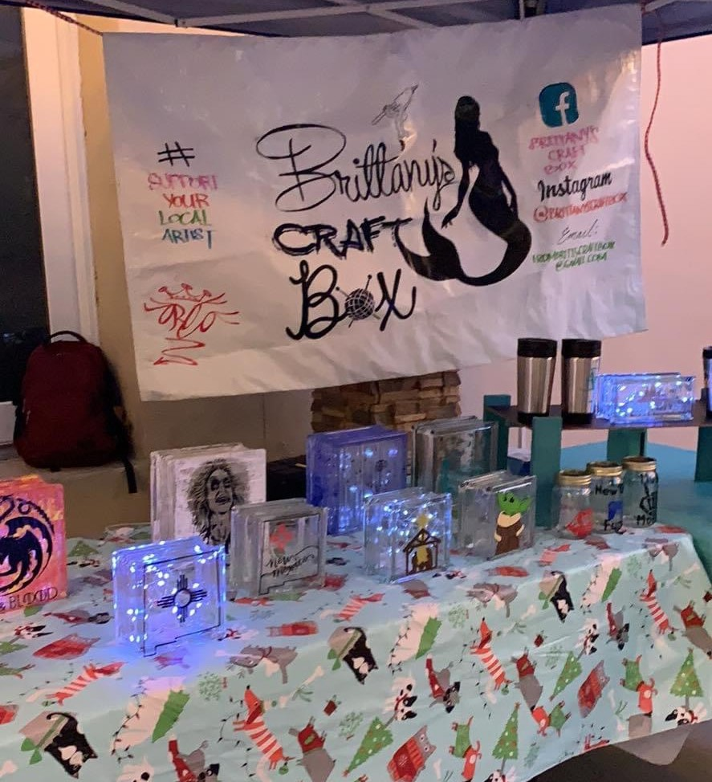

How Brittany's Craft Box Started
Brittany's Story
I started Brittany’s Craft Box about a year ago. I’ve always enjoyed making new crafts. I would see things and challenge myself to make them and learn a new skill. I started the business when someone asked me to make something as a gift. From there, it took on a life of it’s own. And while I do this part-time to supplement my full-time job, this is truly where my heart and passion lie
